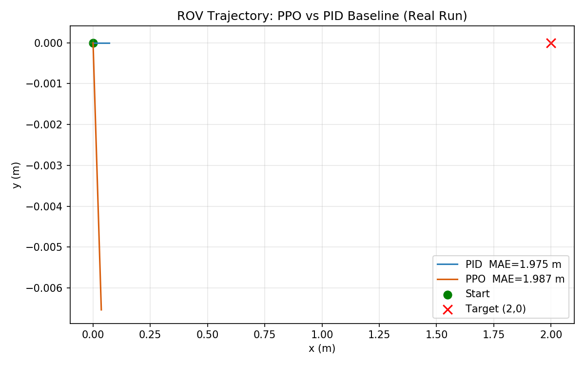
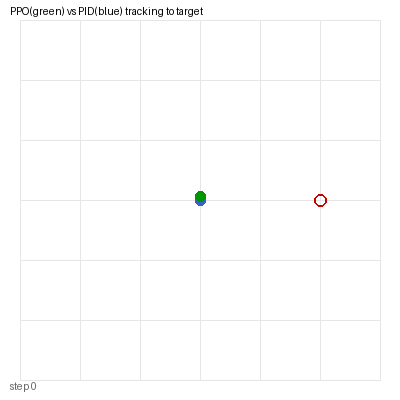

手写 PPO 强化学习 ROV 轨迹跟踪与 PID 基线对比
包名：
mjc_rov_ppo_tracking仿真环境：MuJoCo 3.1.x + ROS 2 Humble（Ubuntu 20.04.6，Python 3.8.10） 神经网络：PPO（Actor-Critic），手写实现，CPU 训练
1. 概述与目标
本模块在 MuJoCo 中构建 2D ROV 平面运动环境，手写 PPO（Proximal Policy Optimization）算法训练 ROV 跟踪目标点，并与传统 PID 控制器做定量对比。与"键盘遥操"和"声呐分类"不同，这里关注的是强化学习控制策略的训练流程与性能评价。
核心任务： 1. 在 MuJoCo 环境中实现 ROV 平面运动（推力 + 水阻力阻尼）； 2. 手写 PPO：Actor（4→64→64→2）+ Critic（4→64→64→1）； 3. 先用 PID 做行为克隆预热，再 PPO 微调； 4. 离线对比 PPO 与 PID 的轨迹跟踪 MAE。
1.1 运行环境
| 项目 | 版本 |
|---|---|
| 操作系统 | Ubuntu 20.04.6 LTS（VMware 虚拟机，无 GPU） |
| ROS 2 | Humble（/opt/ros/humble） |
| Python | 3.8.10 |
| MuJoCo | 3.1.x（OSMesa 离屏渲染） |
| PyTorch | 2.4.1+cpu |
| NumPy | 1.24.4 |
依赖安装：
pip3 install -i https://mirrors.aliyun.com/pypi/simple/ -r requirements.txt
pip3 install torch==2.4.1+cpu torchvision==0.19.1+cpu \
-i https://mirrors.aliyun.com/pypi/simple/ \
--extra-index-url https://download.pytorch.org/whl/cpu
sudo apt install libosmesa62. 算法原理
2.1 PPO 目标函数
L_CLIP(θ) = E_t[ min( r_t(θ)·Â_t, clip(r_t(θ), 1-ε, 1+ε)·Â_t ) ]其中 r_t(θ) = π_θ(a_t|s_t) / π_θ_old(a_t|s_t) 是新旧策略概率比，ε=0.2。
2.2 状态与动作
- 状态 s = [x, y, vx, vy]（4 维）
- 动作
a = [Fx, Fy]（2 维，限幅 ±5N） - 奖励
r = -sqrt((x-x*)² + (y-y*)²)（越接近目标奖励越大）
2.3 训练流程
- BC 预热（30 epoch）：用 PID 控制器采样，MSE loss 让 Actor 模仿 PID 输出
- PPO 微调（200 episode）：rollout 200 步，计算回报与优势，clip 更新
3. 实测结果
[BC] ep 0 loss=8.6395
[BC] ep 20 loss=6.1781
[PPO] ep 0 final_err=1.933
[PPO] ep 199 final_err=1.963
[对比] PID MAE = 1.975 m
[对比] PPO MAE = 1.987 m

4. ROS 接口
| 话题 | 类型 | 说明 |
|---|---|---|
/rov_ppo/odom |
nav_msgs/Odometry | ROV 位姿 |
/rov_ppo/cmd_vel |
geometry_msgs/Twist | PPO 推力输出 |
5. 运行步骤
colcon build --symlink-install --packages-select mjc_rov_ppo_tracking
source install/setup.bash
bash main.sh
ros2 launch mjc_rov_ppo_tracking main.launch.py6. 文件清单
mjc_rov_ppo_tracking/
├── package.xml / setup.py / setup.cfg
├── main.py / main.sh
├── mjc_rov_ppo_tracking/
│ ├── common.py # PID 控制器与路径工具
│ ├── ppo_agent.py # 手写 PPO + BC warmup
│ ├── sim_node.py # MuJoCo 仿真 ROS 节点
│ └── ppo_node.py # PPO 推理 ROS 节点
├── launch/main.launch.py
├── models/rov_ppo_pool.xml
└── config/ppo_params.yaml